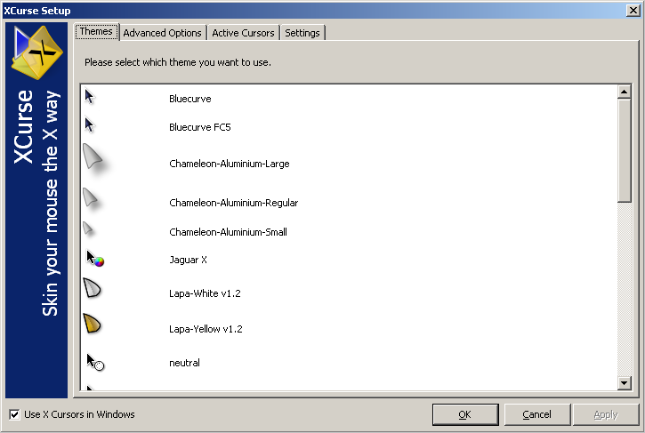
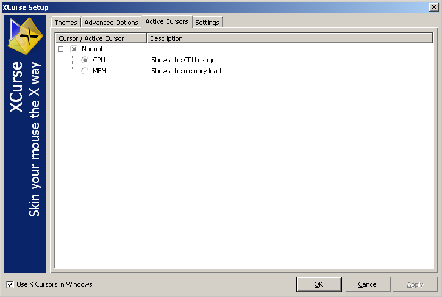

Like the most programs XCurse is deployed with an installation program. Just
run the
install.exe.

You need admin rights because one file (
XCurse.cpl) has to be
copied to your system-folder
In this part we will give you a short introduction to XCurse.
Right after the installation you may wish to configure XCurse. If you deselected the checkbox at the end of the installation process,
you have to open the control panel. Next to the end of the list you may find the XCurse entry. After opening it, you should see a window like this,
but normally only with the one shipped theme.

The next step is, to check the box in the lower left corner, in order to enable XCurse.
If you want to see something, double-click the theme looking most appealing to you and apply the changes with the appropriate button in the lower right corner.
After a short saving time you should see a new cursor ... the XCurse. :)
And whats about new themes?
Please check the "X11 mouse themes" sections of the main sources for X-stuff:
Often you'll get a
*.tar.gz-file. Just use
a good archiver to
unpack the files in the themes-path.
There are themes, with cursors, which contains more than one frame, to supply different cursor sizes. This will result in a flickering cursor.
In this case, you may use the planed themes section on www.theunknownones.net.
Please take a look at the "Settings" page.

It may be, that you wish to share your collection of themes with another user. Therefore it's useful to change the path to your themes.
If you use ActiveCursors, you can change the refresh interval at this page. A value of 1000, which means 1 second is a balance between
cpu load and actual information.
The page with the "AdvancedOptions" gives you the control over the mapping of the cursors.

At the left side, you see the current mapping between the default windows cursor and the cursors shipped with the theme.
If you want to change one of them, select it on the left side and double-click the new cursor at the right side(which holds all cursors deployed
with the theme).
If the theme supports "ActiveCursors" then take a look at this page.

The first level of the tree allows you to choose, which cursors have to be active. The second level gives you the posibility to select,
what information has to be shown. Just try it.

The author of the theme is responsible for this feature. So, if you do not see any item in this tree, this theme does not support
active cursors.